~4 Adding the Bezier Circle~
9/15/2025
Scaling the Circle Bezier Curve
Creating this Shape
Creating this shape is going to be quite in depth, so I am going to try and break it up into byte sized chunks. This will be part one, of building the shape. In this tutorial, we will be dealing with how we can add a Bezier Circle type of curve, to our shape.
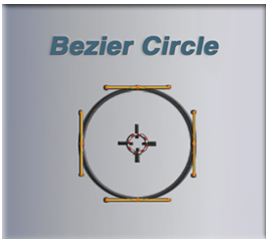
Our Starting Point
We are going to continue our curve from where we left off in the last tutorial. So, right now, you should have a curve that looks something like this.
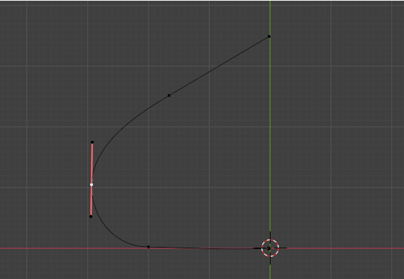Next, we are going to change the location of the first section of the curve that we have on the bottom of this curved shape. It is the part that is lying on the floor. So, select the middle point on its control.
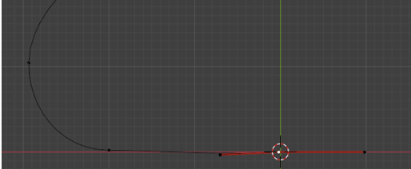We want to move that point so that its handle control point, is lying slightly to the left of where the 3D Cursor is on the floor.
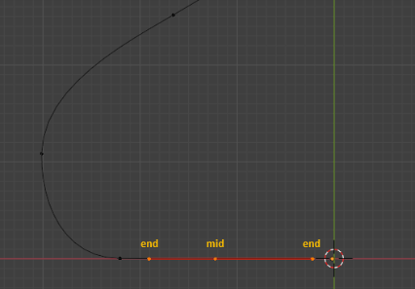Now click on that mid- point, for the control, and hit the E key to extrude it. We can hold down the Y key at the same time to constrain it to the Y axis so this point moves straight downward.
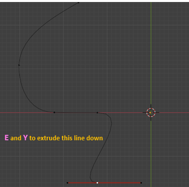Change these two controls to have Automatic Handles. Hit the V key to change the handle type.
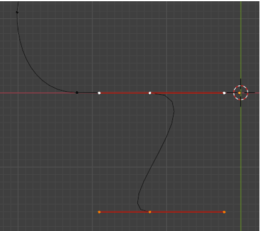Now select the end point on the right handle and change that handle type to Vector. It will now point straight downward. The left handle, you can move to flatten out on the floor.
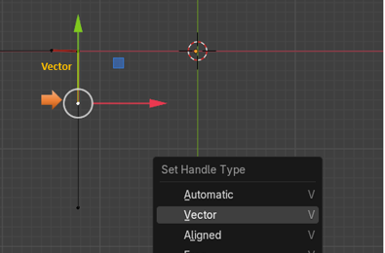Move Cursor to Selected
We are going to be moving the 3D Cursor a couple of times to get it located to where we actually want it. To do this, we will first need to select this mid-point here on this control.
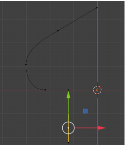
Now with that mid-point selected we can hit Shift and S, then at the bottom of the menu that pops up, we want to select Cursor to Selected.
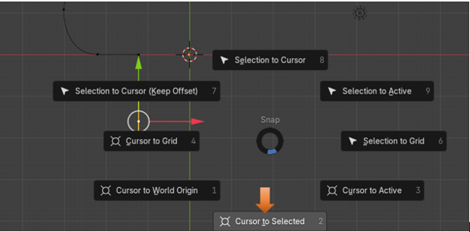Note-To get rid of this pop-up, menu overlay, just press Shift and S again. Shift -S, is a toggle for this Cursor menu.
But we actually do not want the 3D Cursor sitting on that control point, we actually want it to sit on the green line straight to the right of it. That green line that runs straight up and down at the center of our project in the view port.
So, to do that we need to open up that panel at the right side of the viewport using the N key. Go to the View tab, to reach the settings for the 3D Cursor. We need to change the X for Location of the 3D Cursor to get it to sit where we want. Now notice that the red and white ring, of the cursor, is sitting on the green line where we want it. And it is directly straight- across, to the right of the control.
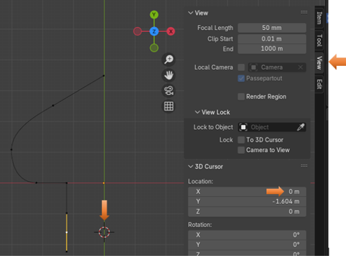
Add a Bezier Circle
Now anything that we add to the scene will be added where the 3D cursor is located. And since we moved our cursor, it is at this location that we want to add our circle object.
Notice that we are doing this (Add) procedure in the Edit workspace, and not the Object workspace.
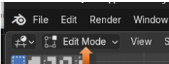Hit Shift -A to add a Circle.
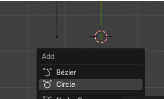
See the circle was added around that 3D cursor, location we just specified.
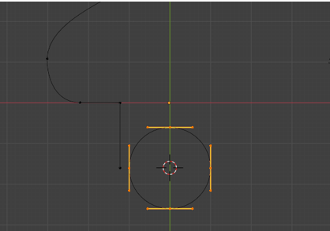You will notice that by default the circle type of Bezier curve is brought in with the handle type of automatic. We know that because we can see that they are that yellow color.
Active Spline Cyclic
Ok, this is where Blender wants to send you into some of this nerdy terminology. As you notice from our original curve, apart from the new circle, we now have this straight line coming down. We want to match up a section of our circle to that line. If we were to keep our handles automatic, and then try to do stuff that we want to do next, things would get wonky. So, we need to turn all of those handles on the circle to be Aligned.
Change the handles on the Circle to be Aligned.
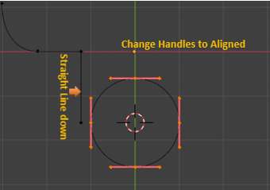Property Panel
Now come over to the Property panel, and with your circle selected in the viewport, click on the tab with the green curve in it. This is the Object Data Properties for the Curve.
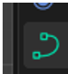
We want to Scroll Down and open up the section for Active Splines.
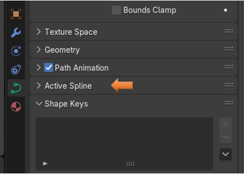
With that section opened, we want to uncheck that box that says: Cyclic.
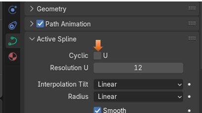If you look at your circle now you will notice that it has a gaping hole in one side of it, but it kept the form of a circle. If you had not changed it from Automatic to Aligned, you would not have been able to keep that circle form, it would have deformed it, as it opened up the circle. So, think of cyclic as an opening up thing. Blender likes to call your curve (spline) don’t let spline throw you, it is just your Bezier curve. So, when you see that category of Active Spline, just think of it as your selected curve.
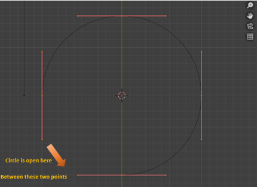Rotating the Circle Curve
We want to get the circle into the correct alignment with that straight line coming down off of the original curve. To do this we will press the R Key to rotate the entire circle.
We want to rotate it so that the opening is toward the top. While you are Rotating try to get the mid-point of that one control as close to the green Y axis as you can. Then when you hit the ctrl key on the keyboard it will snap that point exactly to the Y axis. The ctrl key is what will make it snap, but it needs to be close enough to snap to the right point.
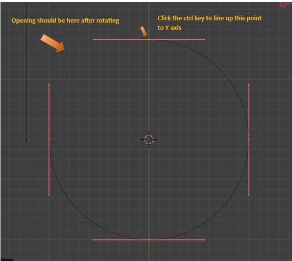
Now select just these two handles here
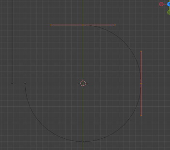Now hit the X key to remove them both.
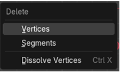You should now be left with only this section here.
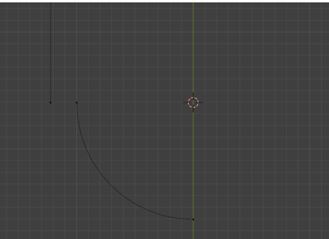Scaling the Circle Bezier Curve
Now go into the Move Tool, and then select your curve section that you have left in the viewport.
Notice where the Move Tool is located here. It is located right in the center of those two controllers
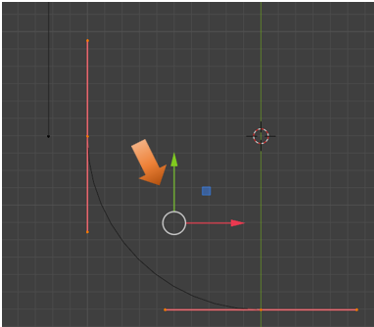
To do the scale correctly, we actually need that Move tool’s pivot point, to be located where the 3D cursor is located. To make this move, we need to access the Pivot point menu at the top of the viewport and select 3D cursor from it.
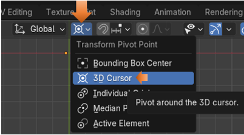
Now the Move Tool gizmo should be sitting on top of the 3D Cursor Location.
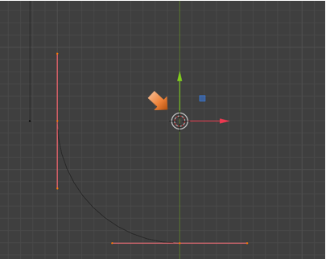We are trying to match these two vertices up by using the Scale Tool. The hot key for scale is S.
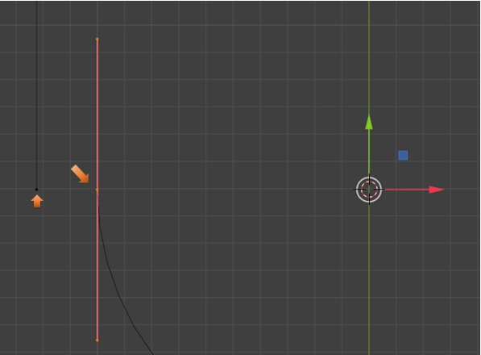Setting the Snapping Tool
We can start the scale process and kind of match things up, but there is a more accurate way of doing this. So instead, we can come up to snapping (The Magnet icon), and then we need to choose Vertex from the drop down. This way when we get close to the vertex that we want, we can snap the other vertex to it.
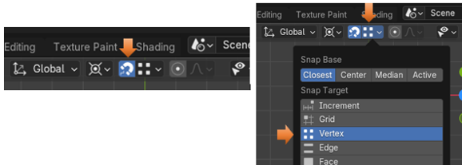Telling Blender what is the Active Controller
Ok, at this point if we were to just start scaling up to try and meet up those two points, nothing is going to snap. That is because we have two controllers selected. Yes, we do want both controller selected because we need the scale to affect the entire curve, but when it comes to snapping, SNAPPING needs to know which controller to work with.
To select an active controller for the picky snapping. We need to first hold down the shift key and click on that top controller’s mid-point, to deselect it. Only the mid-point, do not select the handle end-points. We only want the mid-point vertex to turn black to show it is de-selected.
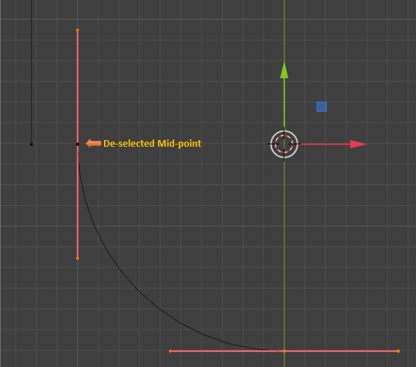
Then hold down the Shift Key, and click on that mid-point again to reenable it. What we want is white vertexes on all 3 points of the top controller, and pink vertexes on the bottom, pink controller. This means that the controller with the white vertexes are the ones that is considered active, and remember, this needs to be done because the snapping magnet is so fussy, we still have that bottom controller selected it is just not active.
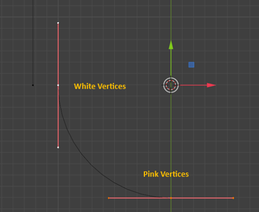Before we can Scale, we need to make two more changes to the Snapping settings. Change Closest button in the Snap Base, to Active.
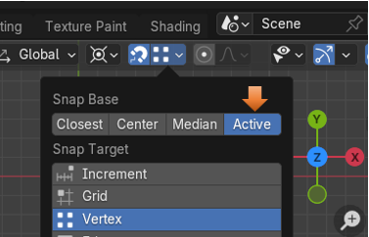Then for the second change in this panel, scroll to the bottom of the Snapping dialog menu, and select Scale. Leave Move selected, just add Scale to it.
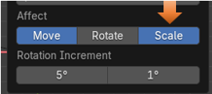Now we can finally hit the S key to Scale.
Note-Make sure when you are pulling, you are aiming that black dotted line straight to the left toward that point on the left, we want to merge with. If you veer the dotted, black scale line slightly above, or below, being straight, you will not see the x in the circle, and without seeing the x in the circle, the two vertices will not Snap correctly together.
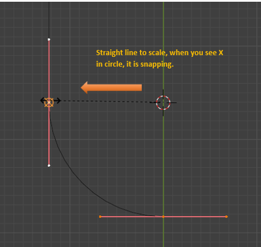
Important-Make sure you turn snapping off or it will interrupt the flow of what we are doing.
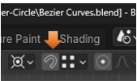Here is the Curve so far.
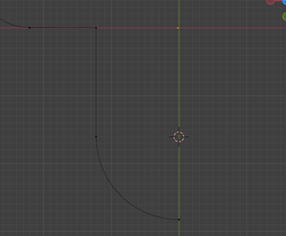Ok, that is the end of the tutorial for this week, we will continue working on the shape of this object next week.